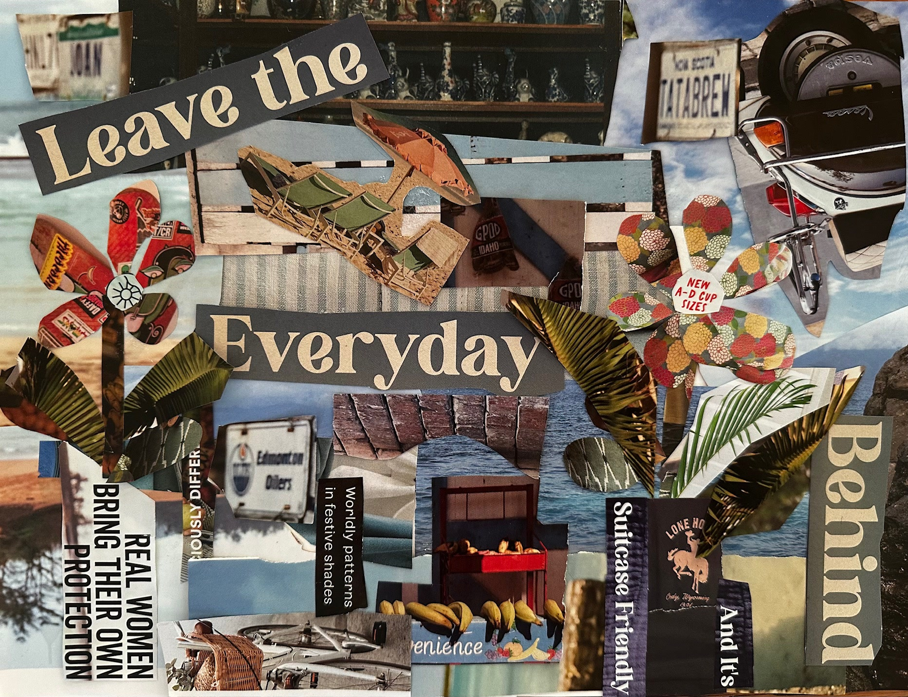

Project 7
Renea, Seth, Elizabeth, Felix
Phase 1 - Renea
Phase 2 - Seth
Real women bring their own protection
Once I rested in your false impressions,
that I need your rules to shield me from unwanted attention.
Dressed up in your doubts and fears.
Told that soft was how to disappear.
But I see now with my own comprehension
that real women bring their own protection
Chores: not of armor but direction,
we’ve been quiet, we’ve been kind
now we draw the fiercest lines.
Not here to beg for love or correction,
we walk in full self-resurrection.
Real women bring their own protection.